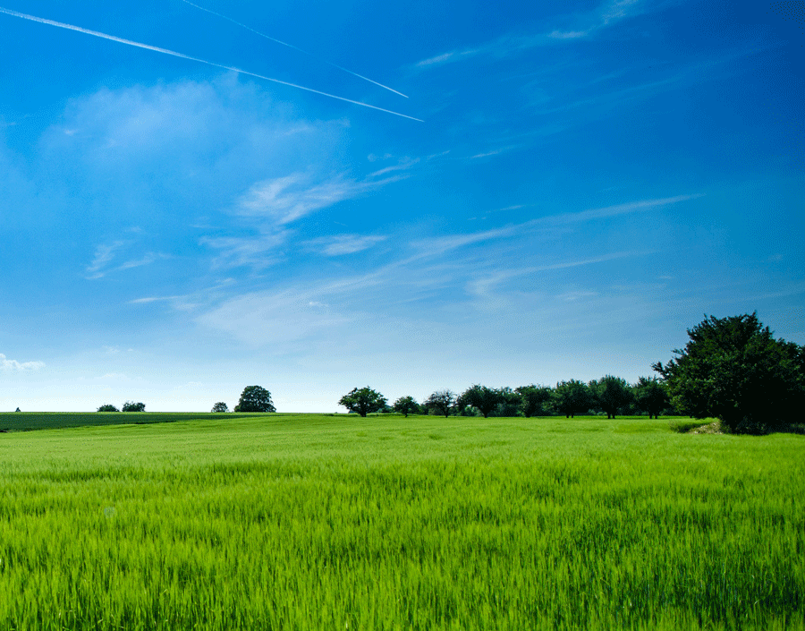

This day in History- Bear River Massacre
link to article from Wikipedia
Bear River Massacre Site, near Preston, Idaho, is the site of the Bear River Massacre, in which a village of Shoshone Native Americans were attacked by the California Volunteers on January 29, 1863. Estimates of Shoshone casualties are as high as 384. It is also known as Bear River Battleground or Massacre at Boa Ogoi. The incident has one of the highest recorded casualty counts of the American Indian Wars of the 19th century, but was overshadowed at the time by events of the ongoing American Civil War. The site was declared a National Historic Landmark in 1990.
The battle site is located several miles northwest of Preston, and is roughly bisected by U.S. Route 91. Its major topographical features are Bear River and the meadows that line its banks, Battle Creek (then known as Beaver Creek), which runs north-south through the area, and has been partially channeled by US 91. North of this channeled area the creek emerges from an escarpment running generally southwest-northeast. The Shoshone village was located on the meadows below this escarpment, and consisted of about 70 lodges on either side of Battle Creek, which cuts a ravine through the meadows on its way to the river. This ravine was one of the major killing fields, as defending Shoshone warriors used it as a natural defensive feature, and unarmed Natives sought refuge there from the battle. Natives fleeing the battle were also shot trying to swim across Bear River. The California Volunteers retrieved their dead, but left the Shoshones where they lay.
In March 2008, a part of the site was acquired by the Shoshone Nation. They announced plans to erect a memorial at the burial site.[5] In early 2008, a picnic/rest area/historic site was developed east of the highway on a hilltop overlooking the site from the north.